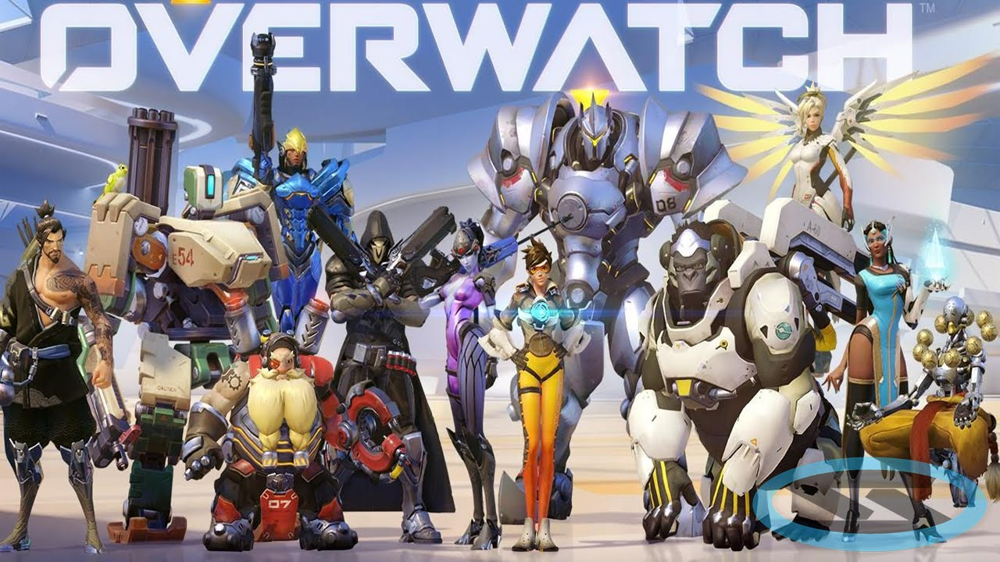

Lets learn about Overwatch.
The game takes place in a fictionalised version of Earth 60 years into the future..
Overwatch was an organisation formed by Earth's United Nations 30 years earlier. I say "was" because it was destroyed,
torn apart by allegations and in-fighting and eventually an explosion at the Swiss headquarters that reportedly killed two of its founding and leading members, Gabriel Reyes and John "Jack" Morrison, and maybe Ana Amari, Pharah's mother. Overwatch was disbanded and declared illegal, and all agents associated with it scattered to the wind. That was six years ago.
But once upon a time Overwatch was great, held aloft and cheered around the world. It was a super-team created to end the Omnic Crisis - omnic robots turned bad
(or was it robots awakening from slavery and rebelling?). For years the omnics had served humans, churned out by huge omnium factories, but something went wrong just over 30 years ago. God programs - AI super-brains - took over the omniums and turned omnics against humans, equipping them for war, and the Omnic Crisis began.
The omnics had taken over most of the world but with the help of Overwatch they were eventually beaten, forced back into submission, although a religious omnic off-shoot was formed called Shambali that claimed omnics had souls, and crusaded for equality with humans.
An era of peace was ushered in and Earth's champion Overwatch prospered for 20 years under the command of Morrison, expanding its influence and numbers all over the world.